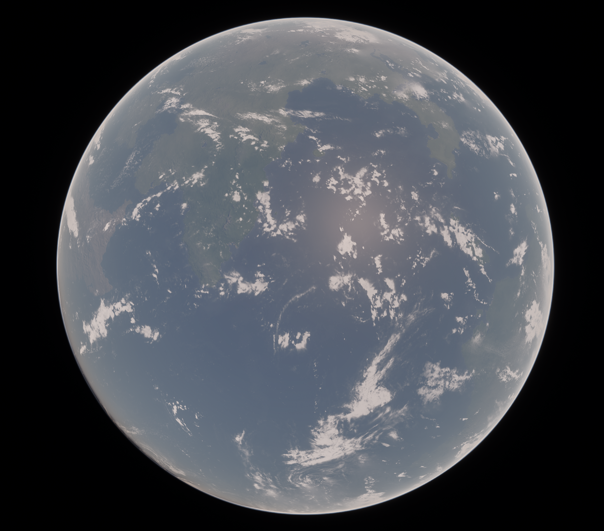

About
MRKI (pronounced "murky") is a mod for Kerbal Space Program that aims to completely revamp the Kerbol system with new textures and visuals, mainly powered by Kopernicus, Environmental Visual Enhancements, and Parallax Continued. MRKI is natively scaled at 2.5x stock scale (with 1x stock scale support in the future) to provide balance to stock parts.
The name MRKI has dual meaning, from the Greek word μεράκι, which roughly translates to "passion project", and the acronym "More Realistic, Kerbalized, Interesting" which are the four pillars of MRKI.